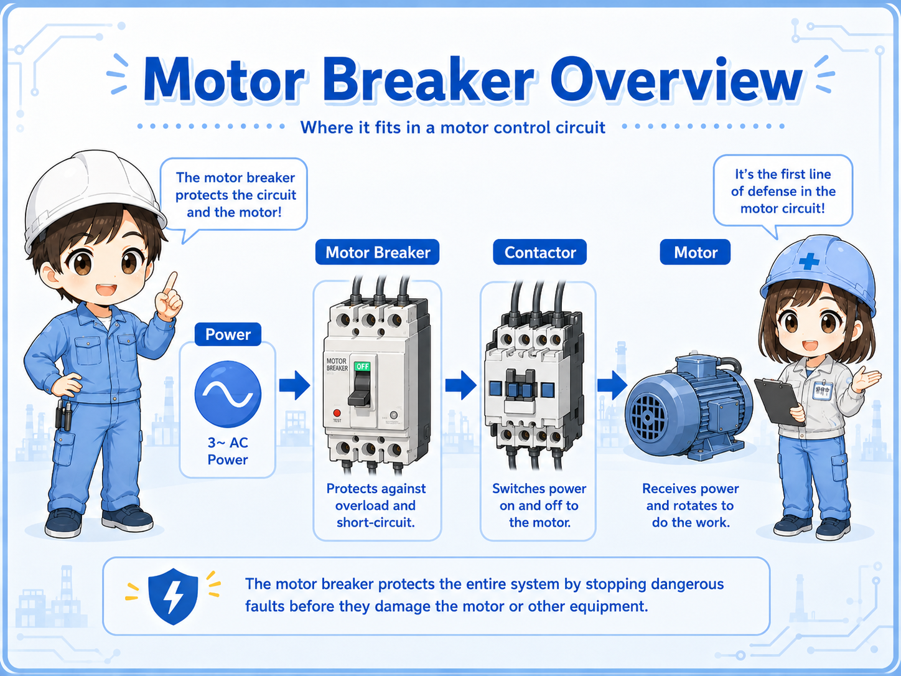
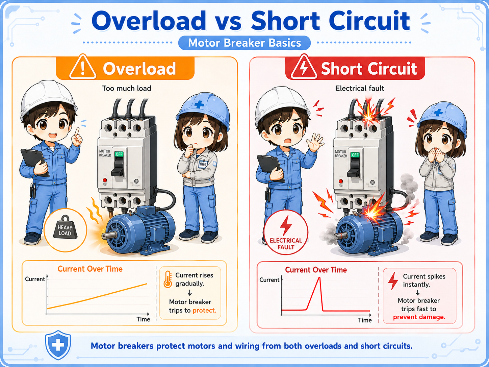
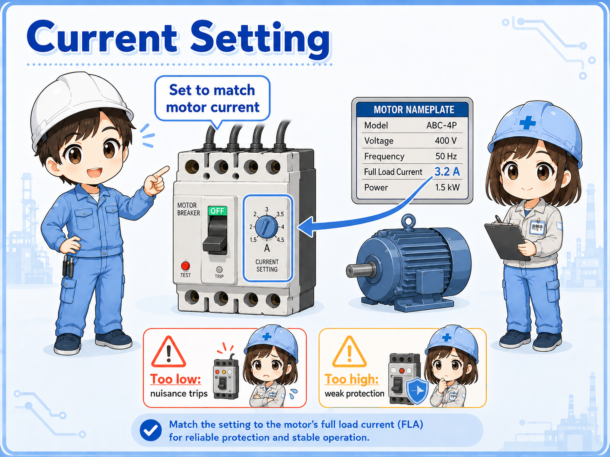
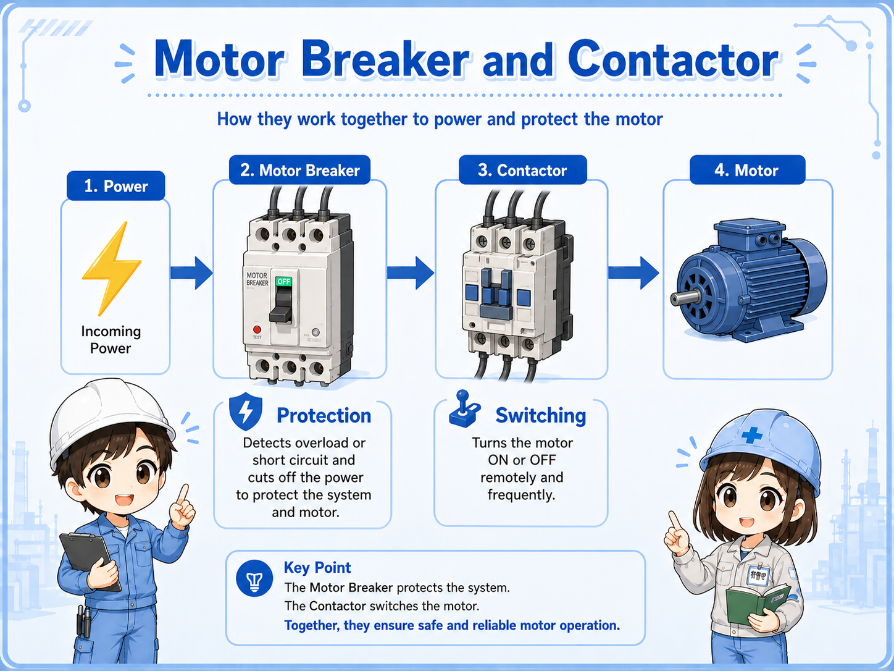
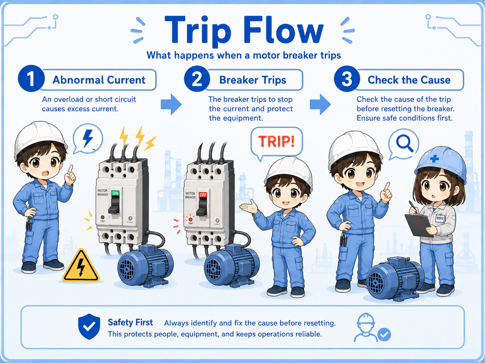
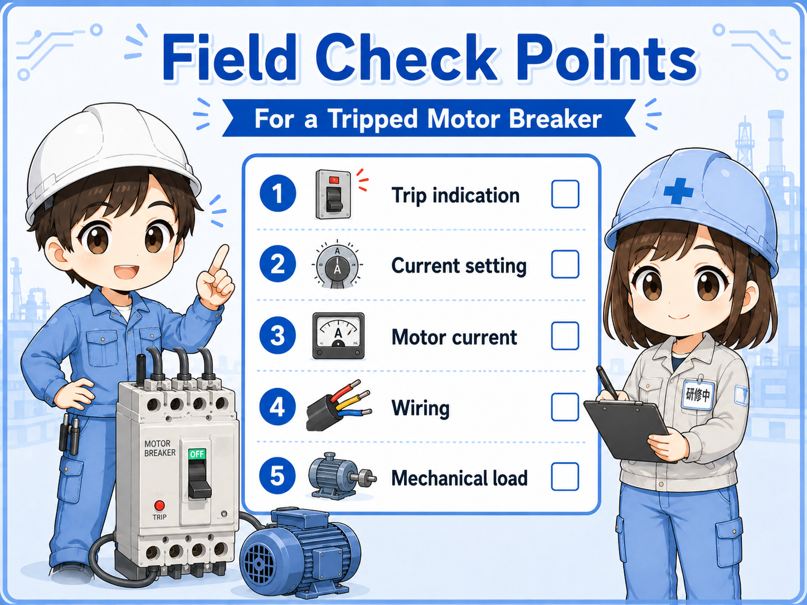

What a motor breaker does
A motor breaker is used to protect a motor circuit when abnormal current flows.
In a control panel, a motor breaker is often placed on the power side of a motor circuit. Downstream of it, a contactor, thermal relay, inverter, or motor wiring may be connected depending on the circuit design.
Its main job is to disconnect the circuit when the current becomes abnormal. This can happen because of a motor overload, wiring fault, short circuit, locked rotor, wrong setting, or mechanical trouble on the machine side.

Overload protection and short-circuit protection
Overload and short circuit are both overcurrent problems, but the meaning is different.
Overload means the motor is drawing more current than it should for a period of time. This may happen when the mechanical load is too heavy, the motor is locked, the bearing is damaged, or the machine is jammed.
A short circuit is a much more severe fault where current rises very quickly because conductors or phases are connected abnormally. This may happen because of damaged wiring, insulation failure, terminal mistakes, or component failure.
| Item | Overload | Short circuit |
|---|---|---|
| Basic meaning | The motor draws too much current because the load is heavy or abnormal. | Very large fault current flows due to an abnormal electrical connection. |
| Typical cause | Locked motor, heavy load, jammed machine, wrong motor size, bearing trouble. | Damaged cable, phase-to-phase short, ground fault, wiring mistake, failed device. |
| Field check | Check motor current, mechanical load, rotation, motor temperature, and setting. | Check insulation, wiring, terminals, damaged parts, and fault marks before reset. |

Current setting is important
Many motor breakers have a current setting dial. This setting should match the motor and the circuit design.
If the setting is too low, the motor breaker may trip even during normal operation or starting. If the setting is too high, the motor may not be protected properly against overload.
The correct setting depends on the motor nameplate current, wiring design, load condition, starting method, and manufacturer’s instructions. In the field, the motor nameplate and drawing should be checked before changing the setting.

Simple way to remember
A motor breaker setting is not a volume knob for stopping nuisance trips. It is part of the motor protection design.
Relation to contactors and thermal relays
A motor breaker is often used together with contactors, and sometimes with thermal relays depending on the circuit.
A contactor turns the motor circuit on and off by control command. A motor breaker protects the circuit when abnormal current flows. These two parts have different roles.
In some circuits, a thermal overload relay is also used for overload protection. In other circuits, the motor breaker provides the motor protection function. The exact arrangement depends on the design and device selection.

Do not mix up switching and protection
A contactor is mainly for switching. A motor breaker is mainly for protection. When checking a motor circuit, separate “command does not turn on” from “protection has tripped.”
What happens when a motor breaker trips
When a motor breaker trips, it is telling you that the circuit experienced an abnormal condition or that the setting and operating condition do not match.
1. Abnormal current
The motor circuit draws current outside the expected condition.
2. Breaker trips
The motor breaker disconnects the circuit to protect the motor circuit.
3. Cause check
The field check should confirm the cause before resetting and restarting.

Do not repeatedly reset without checking
Repeatedly resetting a tripped motor breaker without finding the cause can damage equipment or create a dangerous situation. Check the cause first.
Field check points
When a motor breaker trips, separate the electrical side, motor side, and mechanical load side.

Trip indication
Confirm whether the motor breaker actually tripped and whether the handle or trip display shows abnormal status.
Current setting
Check the setting against the motor nameplate current and the circuit drawing.
Motor current
Measure or check current during operation when it is safe and appropriate to do so.
Mechanical load
Check whether the machine is jammed, overloaded, stuck, or mechanically damaged.
Wiring and insulation
Check terminals, cable damage, phase-to-phase faults, and insulation condition before resetting.
Downstream devices
Check contactor, thermal relay, inverter, motor terminals, and related alarms if present.
Common beginner mistakes
Motor breaker problems become confusing when every trip is treated the same way.
- Resetting the motor breaker immediately without checking the cause.
- Raising the current setting just to stop nuisance trips.
- Checking only the breaker and ignoring the motor or mechanical load.
- Confusing a contactor failure with a motor breaker trip.
- Assuming overload and short circuit are the same problem.
- Ignoring the motor nameplate current when checking the setting.
Use the actual drawing and manual
Motor breaker size, setting, trip characteristics, and coordination depend on the device and circuit design. Use this article as a basic concept guide, then check the actual drawing and manual.
Short conversation

If a motor breaker trips, do not just reset it. First think about why abnormal current flowed.

So I should check the motor, wiring, load, and current setting before restarting?
Exactly. A trip may come from overload, short circuit, mechanical lock, wrong setting, or downstream trouble.
And the contactor is for switching, while the motor breaker is for protection, right?
Yes. Separating those roles makes motor circuit troubleshooting much easier.
Summary
A motor breaker protects a motor circuit when abnormal current flows. It helps protect against overload and short-circuit conditions, but the field check should always look for the real cause of the trip.
When troubleshooting, separate the check into breaker status, current setting, motor current, wiring, insulation, contactor or downstream devices, and mechanical load condition. Do not repeatedly reset a tripped motor breaker without confirming the cause.